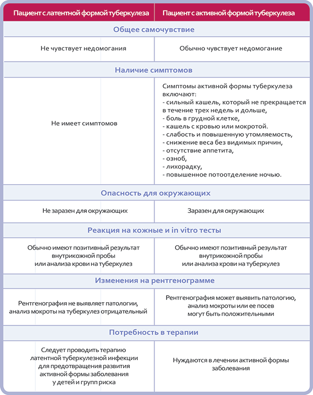

ЛАТЕНТНЫЙ ТУБЕРКУЛЕЗ
Латентный туберкулез - скрытая форма туберкулеза, при которой у инфицированного человека туберкулиновая проба дает положительную реакцию, но не наблюдаются активные проявления туберкулеза. Инфицирование - еще не болезнь. Состояние опасно тем, что может затянуться на долгие годы, никак себя не проявляя, а затем внезапно перерасти в открытую форму заболевания. В 5-10% случаев на каком-то этапе жизни инфицированного человека инфекция переходит в активный туберкулез (болезнь). Чаще это происходит при ослаблении защитных сил организма. Выявление и лечение больных латентным туберкулезом - необходимая мера для предупреждения распространения болезни.
Разница между латентной формой туберкулеза и активной формой туберкулеза
